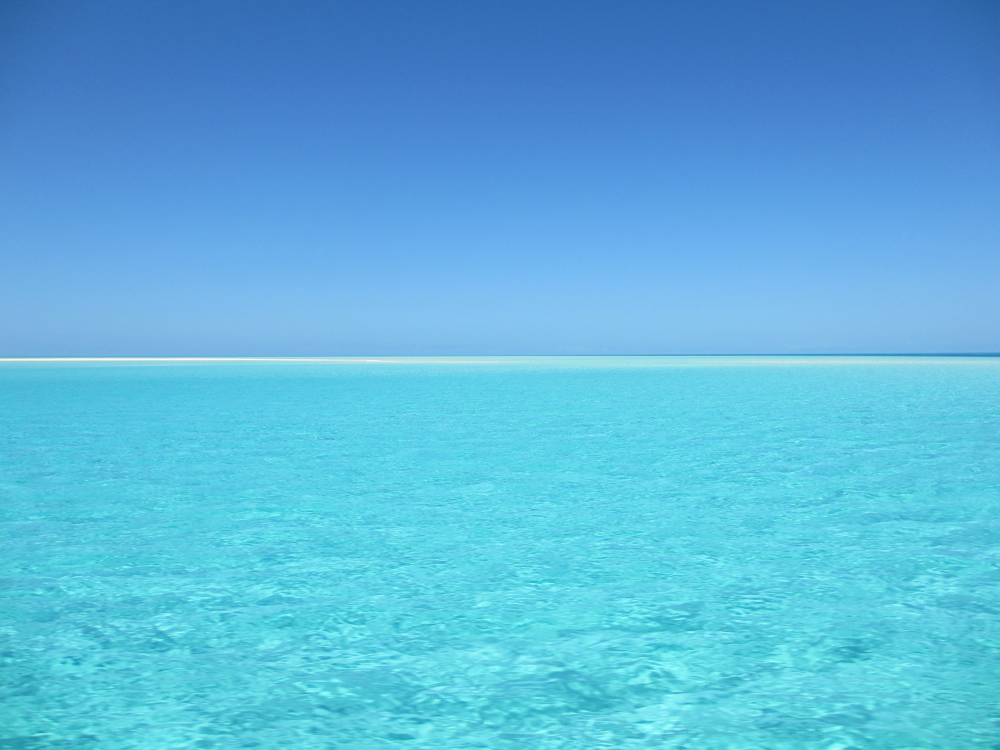
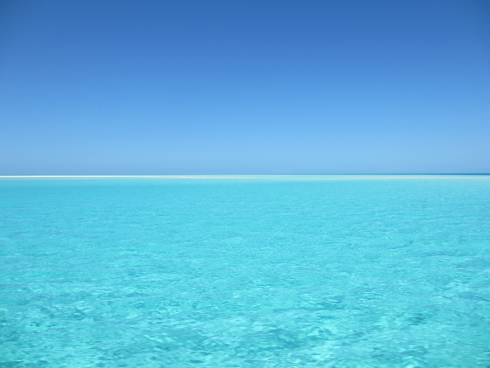

Oceano
Jason DeCaires Taylor é um artista que encontrou sua inspiração no oceano, utilizando o mar como sua tela. Sua criação de uma galeria subaquática com esculturas em Granada, nas Antilhas, é apenas uma das muitas obras impressionantes que ele já criou.
A obra de Taylor é uma celebração do oceano e da vida marinha, e serve como um lembrete da importância de proteger e preservar os ecossistemas submarinos. Como fotógrafo subaquático e instrutor de mergulho, ele tem uma profunda compreensão da beleza e fragilidade do mundo subaquático.
As esculturas de Taylor não são apenas obras de arte impressionantes, mas também são habitats artificiais para peixes, crustáceos e outros animais marinhos. A medida que as esculturas se tornam colonizadas pela vida marinha, elas se transformam em um ecossistema vibrante e diverso.

 
